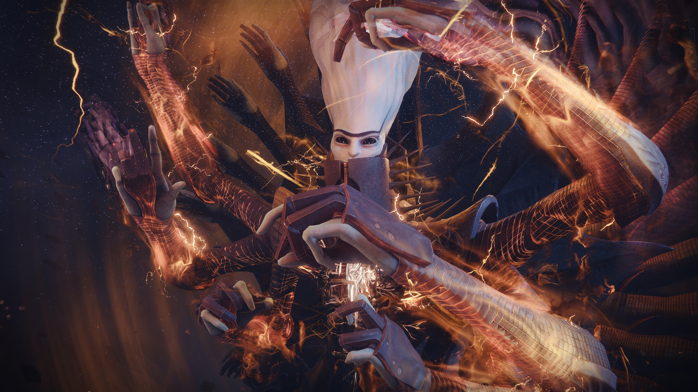

Witness do portálu, který do Travelera vyřízl, vstoupí. Strážci města se pokusí o stejný princip, portál je pro ně ale nemožný vkročit skrz. Tady na scénu přichází Crow - velitel Vanguardu na místě, které dřív patřilo našemu příteli Cadye-6. Crow není ale ledajaký vůdce; je to právě Uldren Sov, stejný muž zodpovědný za smrt předchozího velitele Vanguardu. Proč si říká Crow? Donedávna netušil nic o jeho minulosti, jelikož po Uldrenově smrti jeho tělo našel a oživil Ghost zvaný Glint. Jako Savathûn či náš Strážce, Crow nemá žádné vzpomínky na jeho minulý život, a proč ho každý Strážce nenávidí. Ale Uldren zemřel. V těle i v duši. Crow je někým zcela jiným, a tím si získal přízeň Vanguardu. Pomocí manifestace Riven, kterou dočasně vytvořili Awoken, se mu podařilo, za pomocí posledního přání, dostat na druhou stranu Travelera - do jeho Bledého Srdce. Netrvalo dlouho, a Crow se vydal směrem k zakořeněnému moru, který Witness a jeho temnota do Srdce Travelera přinesli. Na cestě ale potká zajímavou postavu. Přepadne ho, a skoro to vypadá, že ho připraví o život. Je to právě Cayde, nyní bytost plná světla, ale neschopná síly Světla použít. Cayde zraněného Crowa zná pouze jako muže, který ho připravil o život ve Věznici. Vidí v něm ale změnu charakteru, a hlavně Ghosta po jeho boku. Složí zbraň, a spolu se vydají napříč nebezpečím. Díky Riven se podaří i našemu Strážci portálem projít, a brzy se též ocitneme v Bledém Srdci Travelera. V dálce vidíme ten stejný kořen jedu, co viděl Crow. Brzy se dostáváme na zvláštní místo - stará věž, ve které operoval Vanguard než byla zničena při Ghaulově invazi Země. Ve věži se taky setkáme s duem Cayde a Crow, se kterými se postupně vydáváme blíže a blíže struktuře Temnoty. V Bledém Srdci se nachází mnoho stvůr, například Zářící Hive, vyslání Savathûn. Nachází se tu i Taken; Hive, Vex, Eliksni i Cabal kterým bylo vzato jejich myšlení a nezávislost Oryxem. Po jeho smrti ale Taken následují onu entitu Temna toužící po Finálním Tvaru. Také se tu ve vysokých množstvích vyskytují bytosti známí jako Dread. Je jich několik druhů, například Attendant a Weaver jsou Dread, kteří dříve byli Psioni, odstřelovačská jednotka armád Cabal, spojeni se silami Temnoty. Attendanti používají Stasis a Weaveři používají Strand. Pak tu jsou také Tormentoři; velká monstra s tmavě černými kosami, vytvořené podle stavby těla spojence Witnesse známého jako Nezarec. Právě jemu patří pyramida pod povrchem našeho Měsíce, a on byl zodpovědný za všechny přízraky nočních můr, co se s pyramidou objevily. Dread jsou silní, ne však nesmrtelní.


Na naší cestě Bledým Srdcem eventuálně potkáváme Savathûn a její Zářící Hive. Důvod, proč je v srdci Travelera vysvětlila jako dočasnou alianci s Vanguardem kvůli společnému cíli: Odvrátit Finální Tvar vesmíru. Brzy jsme také odhalili záhadnou sochu. Sochy jsou pozůstatky toho, kdo záhadný nepřítel Travelera byl - nebo spíše, kdo byli. Witness nebyl vždy jeden; kdysi dávno to byla celá civilizace, první civilizace požehnaná Travelerovým Světlem. Oni ale chtěli víc. Podařilo se jim najít zvláštní artefakt symbolizující emoce, mysl a vnímání. Toto byl artefakt Veil. Pokusili se ho sloučit s Travelerem za účelem balancování Světla a Temnoty. Traveler jejich nápad odmítnul, a uprchl z jejich domovské planety. Pomocí artefaktu se civilizace spojila do jedince nyní známým pod názvem The Witness, který má v úmyslu to samé, co civilizace před dlouhou dobou plánovala. Byli tu ale i ti, ze kterých se Witness také skládá, kteří nesouhlasili s účelem Finálního Tvaru. Pár z těchto Odpůrců bylo fyzicky vyhnáno v podobě těchto soch. Zničení sochy znamená udělení rány, i když jen ve vědomí entity. To se našemu Strážci nakonec podařilo, a povedlo se nám odstřihnout vliv, co zevnitř Witness na Travelera měl. Dokonce se nám ho podařilo i zranit. Finální bitva byla nezvratná. síly Temnoty a samotný Witness proti lidstvu, Eliksni, Hive, Cabal i Awoken. Při finálním střetu se náš Ghost, společně s jedenácti dalšími, rozzářil v obrovský paprsek Světla, a tím Witness, ale i náš Ghost, umírá. Po bitvě se setkáváme s Caydem, který obětuje svoji limitovanou existenci uvnitř Travelera, a dá své Světlo našemu Ghostovi, čímž ho přivede zpátky k životu. Witness je mrtvý, Temnota se pomalu stahuje. Co bude dál?